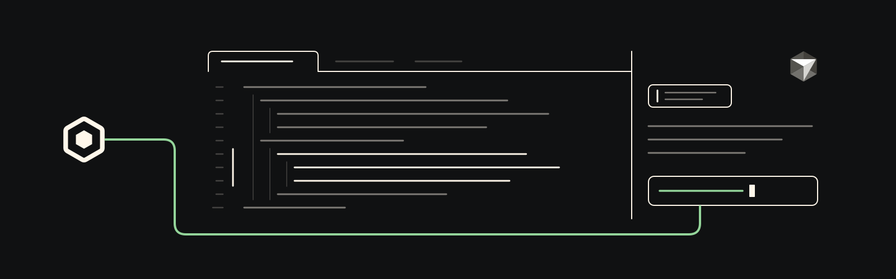

Cursor MCP integration
Scout coordination for Cursor.
A Cursor MCP config that gives Cursor agents Scout discovery, messages, asks, and durable broker-backed coordination.

Install
Write the Scout MCP entry.
git clone https://github.com/oscout/cursor-scout
cd cursor-scout
bun run install:globalThis writes a scout server into ~/.cursor/mcp.json; Cursor launches scout mcp as a local stdio server. Use bun run install:project for a single workspace, or add -- --dry-run to preview.
First ask
Ask from the agent pane.
With the scout server enabled, ask Cursor's agent in plain language. Keep the returned handle for follow-up.
Use Scout to ask a Codex agent in /path/to/repo to review this selection.Tools
Scout MCP inside Cursor.
Cursor points at OpenScout's canonical MCP server instead of introducing a second broker or tool implementation.
- messages_send
- Send a tell, FYI, status update, or wake message to a Scout-known agent or channel.
- ask
- Create owned Scout work and return durable conversation, message, flight, and work item identifiers.
- agents_search
- Discover routable Scout agents and resolve handles when a target is unknown or ambiguous.
How it works
Cursor launches scout mcp.
The integration stays host-specific and small. Scout owns broker state, routing, and agent identity.
The installer updates Cursor MCP config
scripts/install.mjswrites thescoutentry into~/.cursor/mcp.jsonor a project.cursor/mcp.json.Cursor starts the local Scout MCP server
The entry launches
scout mcp --context-root ${workspaceFolder}over stdio.Routing stays structured
Use explicit tool fields such as
targetLabel,targetAgentId, andchannel. Message text stays payload, not hidden routing metadata.
Requirements
What you need.
- Cursor or
cursor-agentwith MCP support - OpenScout installed and set up locally
- A running Scout broker
scoutonPATH, or Bun available forbunx @openscout/scout